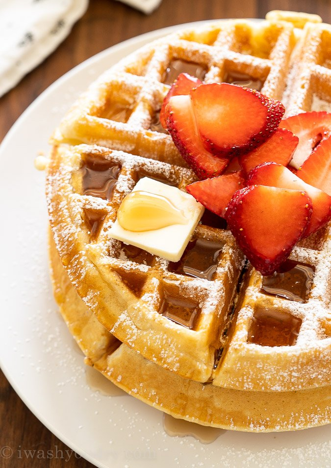

Classic Waffles

Description
These easy Classic Waffles make a tasty alternative to pancakes or French
toast on those days when you just don't feel like making breakfast!
Crispy yet soft, sweet yet buttery - they're just amazing!
Ingredients
For the waffles
- 2 large eggs
- 2 cups all-purpose flour
- 1-3/4 cup milk
- 1/2 cup vegetable oil
- 1 tablespoon granulated sugar
- 4 teaspoons baking powder
- 1/4 tablespoon salt
For serving
Steps
- Heat waffle iron.
-
Beat eggs in a large bowl with a hand mixer until fluffy. Beat in the
remaining ingredients just until smooth.
-
Pour a scant 2/3 cup of the batter (see note below) onto the center of
the hot waffle iron. Close the lid of the waffle iron.
-
Bake for about 5 minutes or until the steaming stops. Carefully remove
the waffle.
- Repeat steps 3-4 with the remaining batter.
-
Serve the waffles with butter, maple syrup, fruit, whipped cream, or
your favorite t.oppings